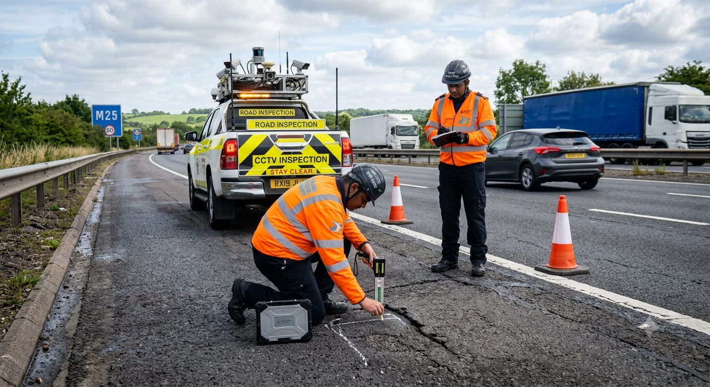
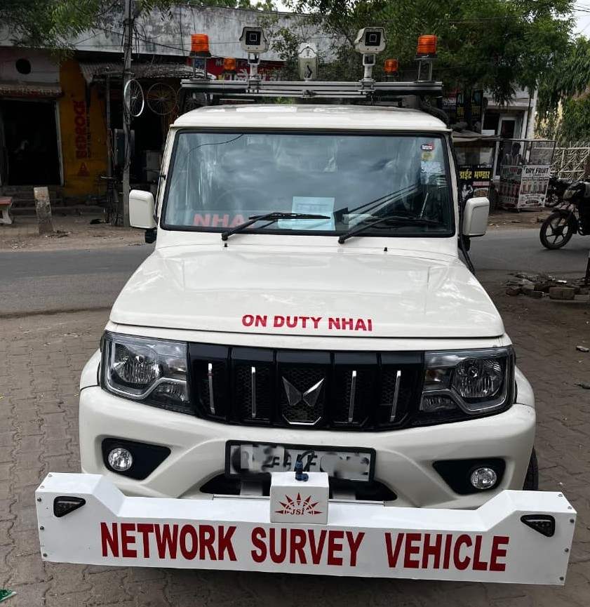

OUR EXPERTISE
Building smarter infrastructure with engineering excellence and AI-powered road inspection solutions.
SMART ROAD INFRASTRUCTURE SOLUTIONS
Pave Pulse civil specializes in the development and inspection of roads, highways, bridges, and tunnels. Our core strength lies in AI-based road inspection, helping detect cracks, potholes, road signs, direction boards, street lights, and other critical assets to improve safety, maintenance, and infrastructure performance.
Read More
